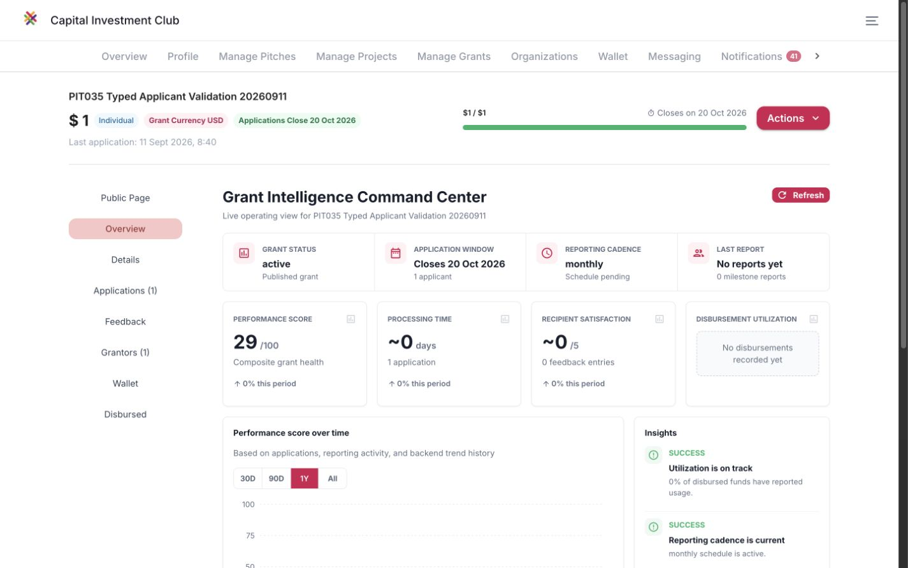

Living review artifact · Chrome only
Pitcher go-live
findings
Real browser journeys. Evidence-backed outcomes.
A transparent view of what works, what failed and what remains.
Release signal: Not ready for go-live sign-off
What has been demonstrated
Successful subchecks, not whole-scenario passesInvestment lifecycle
Standard bid/counter acceptance and rejection, takeover ratification, reconciled capital, actual automatic project promotion and both-party agreement signatures.
Grant lifecycle
Draft → application → approval → USD5 award → feedback. Separate typed application validation, close/reopen, stale-submit rejection, termination and reconciled USD1 creator refund.
Collaboration & safeguards
Private RFI reply/closure, nonparty assessment denial, blocked-message rejection, organization-role denials, report question closure and watchlist persistence.
Findings register
Consolidated interim register, not an exhaustive count of every granular run note. Expand a finding for reproduction, expected behaviour and follow-up. No fix is verified by this publication.
All 35 scenario records
35 partial · 0 complete · 6 reusedEach cell means the whole scenario remains incomplete at that size—not that no checks were performed there. Exact-size modal, receipt and denial-screen observations are preserved in underlying runs.
| Scenario | Executed / observed | Still needed | Six-size completion |
|---|
Scoped blockers and remaining work
Selected visual evidence
This unchanged capture shows the synthetic grant before termination, including monthly reporting despite the tracking-off setup. It is a historical state, not the current grant state or a whole-size pass. The subsequent grant was terminated and its creator refunded.

Method, provenance & history
Execution contract
Single computer, real Chrome UI. No Playwright or product API workflow execution. Automation is limited to seed prerequisites and evidence/report bookkeeping. Sandbox fixtures and amounts; no production finance certification.
Frozen reuse window
Eligibility frozen at 11 Sep 2026 06:15:13 UTC; prior records from 10 Sep 06:15:13 UTC retained. PIT001–006 reused without replay. Historical failures and dimension limitations remain intact.
Build provenance
Recorded deployment: auth-34564736091-1
Build: mcKxBhqpwBhcsAHYdnYDA
Revision: 5fbf4b35cfcfef4aa54b7daec6e3fee0398a0403
Source records
Private webapp repository, tests/e2e/pitcher/: RESUMED_RUN_20260911.md, REUSED_RESULTS_20260911.md, RESPONSIVE_COVERAGE_20260911.json, REMAINING_EXECUTION_20260911.md, EMAIL_READBACK_20260911_CONTINUATION.md, CONTINUATION_EVIDENCE_20260911.md and each numbered scenario’s runs/ records. Later appendices supersede older queue snapshots. These are provenance references, not publicly accessible attachments.
Publication history
Revision 1 · 11 Sep 2026: published at the user's request before further testing. Product evidence through the 16:06 UTC saved checkpoint. Historical browser-control interruption subsequently recovered for inspection. No additional product test or fix is asserted by report publication.
What is required before sign-off
Resolve and independently retest release-critical failures, reconcile both sides of financial events, finish unexecuted role/negative/delivery branches, and verify complete journeys across all six Chrome sizes. Record exact dimensions, notification/email recipients and CTA destinations. A passing modal or seeded prerequisite is never a whole-scenario pass.